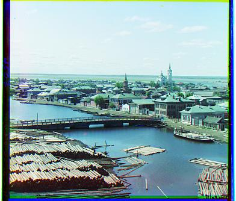
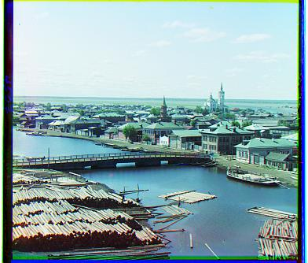

Colorizing the Prokudin-Gorskii Photo Collection
Roth Yin | rothyin@berkeley.edu
Overview
The Prokudin-Gorskii Collection features color photographic surveys of the Russian Empire made between ca. 1905
and 1915.
Prokudin-Gorskii's triple-frame black-and-white glass negatives consist of three exposures made through blue,
green,
and red filters to produce photographs that could be printed or projected in color.
Learn more at
https://www.loc.gov/collections/prokudin-gorskii/
The goal is to take the digitized negatives and, using image processing techniques,
automatically produce color images with as few visual artifacts as possible.
Result
Visual

 

Numerical
| filename |
v_offset_b2g |
h_offset_b2g |
v_offset_r2g |
h_offset_r2g |
| cathedral |
-5 |
-2 |
7 |
1 |
| church |
-25 |
-4 |
33 |
-8 |
| emir |
-49 |
-24 |
57 |
17 |
| harvesters |
-59 |
-17 |
65 |
-3 |
| icon |
-41 |
-17 |
48 |
5 |
| lady |
-55 |
-8 |
62 |
4 |
| melons |
-81 |
-10 |
96 |
3 |
| monastery |
3 |
-2 |
6 |
1 |
| onion_church |
-51 |
-27 |
57 |
10 |
| self_portrait |
-79 |
-29 |
98 |
8 |
| three_generations |
-53 |
-14 |
58 |
-3 |
| tobolsk |
-3 |
-3 |
4 |
1 |
| train |
-42 |
-6 |
43 |
27 |
| workshop |
-53 |
0 |
52 |
-11 |
More results

| filename |
v_offset_b2g |
h_offset_b2g |
v_offset_r2g |
h_offset_r2g |
| merv |
-32 |
-5 |
47 |
2 |
| poliana |
-42 |
2 |
55 |
11 |
| urals |
-40 |
-33 |
55 |
25 |
Approach
Because the three frames are given in the same image vertically,
divide the image up evenly to get the individual frames.
The basic idea is to exhaustively search over a window of possible displacements and choose the best match.
- Because the frames are separated naively, the vertical displacements are considerably larger than the
horizontal
displacements. The search window is experimentally chosen to be 1/15 vertically and 1/50 horizontally.
- Because of the undesired behaviors towards the peripheral region, the periphery is ignored when scoring the
displacements. The periphery is chosen to be 1/8 experimentally.
- The basic scoring metrics are Sum of Squared Differences (SSD) and normalized cross-correlation (NCC). SSD
costs
less computationally. SSD is used because experimentally the results of both are comparable.
- A base color frame is chosen to match the rest two color frames. Different bases may have similar results,
but
green is chosen because it is significantly better in the image of Emir (shown above).
More details:
- Because the amount of undesired peripheral behaviors vary in different images, the cropping mainly aims to
eliminate the black strips on the borders.
- The border strips cannot be trivially removed because they are not 100% black.
- Cropping is used instead of padding because padding seems unlogical to me. Padding introduces artifical
quantities
used in scoring which may affect the results. I regard it as a better approach to rather use parts of the
given
than introduce more to use all of the given.
- As a direct result of this, rolling is no longer neccesary.
When processing large images, I used the technique of image pyramid. It means that I first run the above
algorithm on
smaller, lower-resolution version of the images, then gradually increase the resolutions and run the algorithm
around the
displacements found on the previous level, until reaching the original images.
- The speed of the algorithm depends on the level of pyramids. Reducing the images to regular jpg size (less
than
500pi) is enough to control the runtime per image under 50 seconds. More levels result in faster speed, but
less
accuracy.
- The resolution is increased by a factor of 2 each time. This also means I first decrease the image to find
the
low enough resolution to start with.
- The search window is always with respect to the original resolution.